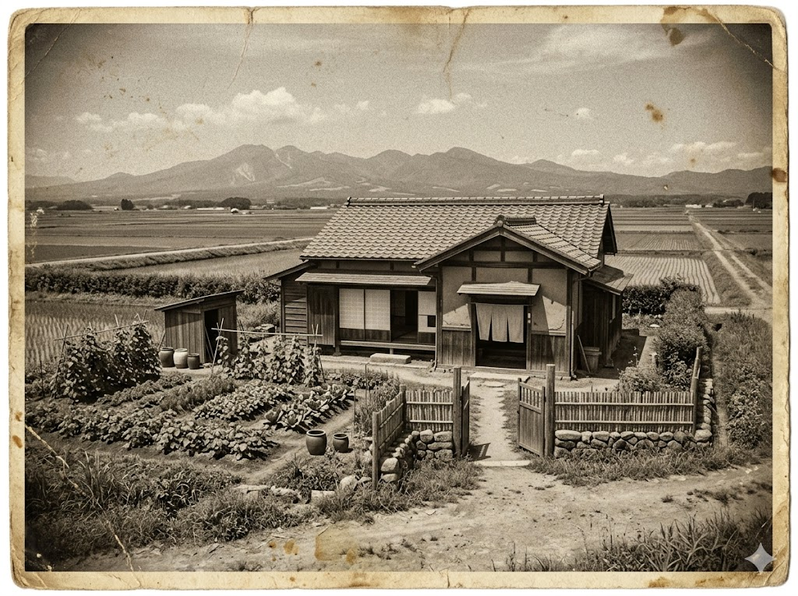

ここに、清治さんは生きていた。
菜園の茄子が、もうすぐ実る。
彼はそれを、食べることができなかった。
清治さんの家を、遠くから見た。
中に入ることはできなかった。████████████████だから。
でも、写真を撮った。記録するために。
菜園に誰かがいた。女の人だった。しゃがんで、草をむしっていた。顔は見えなかった。
彼女はまだ、知らないのだと思う。
声をかけようとした かけられなかった。私は何者でもないから。
茄子が実ったとき、食べる人間がいない。それだけは、分かっていた。